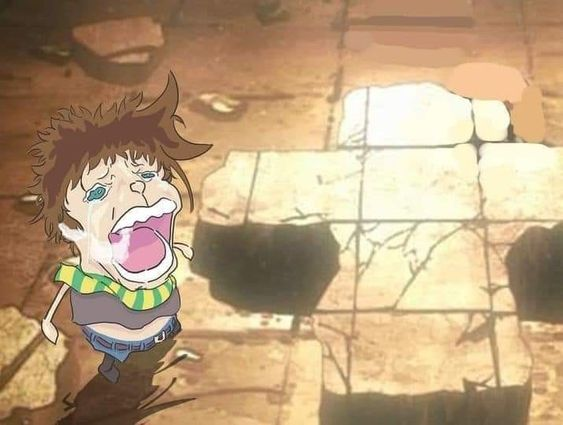

Jojos Bizzarre adventure parte 2
 La segunda parte de JoJo's Bizarre Adventure, titulada "Battle Tendency", nos transporta a una década después de los eventos de "Phantom Blood". Aquí, seguimos las aventuras de Joseph Joestar, nieto de Jonathan, en una lucha épica contra la resurgente amenaza de los Pilar Men, seres antiguos con habilidades sobrenaturales. Esta vez, la acción se desarrolla en diversos escenarios, desde las calles de Nueva York hasta las junglas de México, ofreciendo una emocionante combinación de intriga, humor y batallas llenas de ingenio.
"Battle Tendency" se destaca por su ritmo frenético, personajes carismáticos y una trama llena de giros sorprendentes. Joseph Joestar, con su ingenio y astucia, se convierte en un héroe inolvidable mientras enfrenta desafíos cada vez más peligrosos en su lucha por proteger al mundo de la amenaza de los Pilar Men. Esta parte eleva aún más la saga JoJo con su energía contagiosa y su enfoque en temas de coraje, determinación y el poder del ingenio humano para superar incluso a los enemigos más formidables.